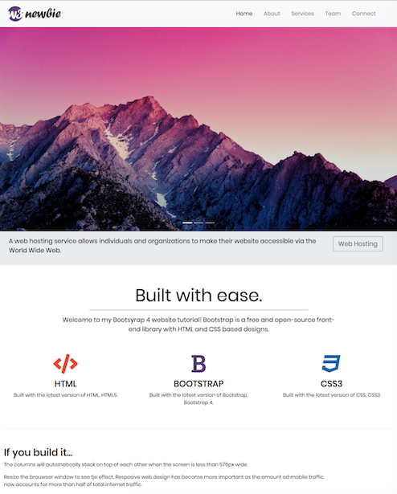
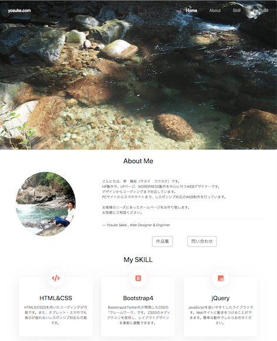

...
yosuke.com
Home
(現位置)
About
Skill
Portfolio
About Me
こんにちは、堺 陽祐（サカイ ヨウスケ）です。
HP製作や、LPページ、WORDPRESS製作を中心に行うWEBデザイナーです。
デザインからコーディングまで対応しています。
PCサイトからスマホサイトまで、レスポンシブ対応のWEB制作を行っています。
お客様のニーズにあったホームページをお作り致します。
お気軽にご相談ください。
— Yosuke Sakai , Web Designer & Enginner
作品集
問い合わせ
My SKILL
HTML&CSS
HTML5/CSS3を用いたコーディングが可能です。また、タブレット・スマホでも表示が崩れないレスポンシブ対応も可能です。
Bootstrap4
BootstrapはTwitter社が開発したCSSの「フレームワーク」です。 CSS3のメディアクエリを使用し、レイアウトデザインを柔軟に調整できます。
jQuery
JavaScriptを扱いやすくしたライブラリです。Webサイトに動きをつけることができます。簡単な動作でしたらお任せください。
Wordpress
CMS「Wordpress」を利用したWebサイトの構築が可能です。テンプレートテーマを用いたサイト制作。オリジナルテーマ作成。
PHP/MySQL
PHPを使ってデータベースと連携したWebサイトを作成することが可能です。
Photoshop
Photoshopを使ったデザイン制作が可能です。写真の加工、UIパーツ、ロゴ・バナー制作、Webサイトデザインなど。PNG/JPEGなどの書き出しも可能です。
Portfolio

